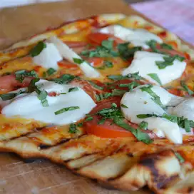

Pizza

Pizza on the grill is a fantastic way to make pizza at home.
The heat of a hot grill is a perfect match for a professional pizza oven.
- 1 cup warm water (110 degrees F/45 degrees C)
- 1 (.25 ounce) package active dry yeast
- 1 pinch white sugar
- 1 red bell pepper, chopped
- Heat the oil in a large saucepan.
- Add the onions and saute for 3 minutes.
- Add the peppers and saute for 2 minutes.
- Add the zucchini and saute 3 minutes before adding the tomatoes, tomato paste, garlic and oregano, basil, thyme, salt and pepper.
- Cover the saucepan and simmer for 20 to 30 minutes (the longer the better as long as the sauce is not sticky.)